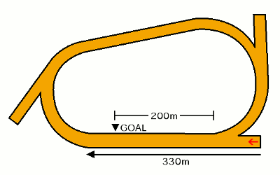

無料メルマガで連日の無料予想と秋G1の極秘情報もGETしよう!!
無料メルマガ登録フォーム
最終更新日：
YouTubeで登録者数6万人のうまめし競馬チャンネルを運営しているうまめし君です！
馬券に直結する、予想に役立つ高知競馬場の1400メートルの詳しい特徴について話したいと思います。
もくじ
競馬場特徴の一覧に戻る
札幌 函館 福島 新潟 東京 中山 中京 京都 阪神 小倉 地方 海外
無料メルマガで連日の無料予想と秋G1の極秘情報もGETしよう!!
無料メルマガ登録フォーム
高知ダ1400mコースでの枠順と脚質別の成績を見ていきましょう。
1枠の成績は（1着164回・2着203回・3着199回・着外1411回）で、勝率は8パーセント・連対率は18パーセント・複勝率は28パーセントとなっています。 逃げ警戒
脚質別の馬券に絡むパーセンテージは逃げ：51％・先行：36％・差し：21％・追込：7％となっております。
2枠の成績は（1着189回・2着185回・3着193回・着外1410回）で、勝率は9パーセント・連対率は18パーセント・複勝率は28パーセントとなっています。 逃げ警戒
脚質別の馬券に絡むパーセンテージは逃げ：60％・先行：37％・差し：19％・追込：8％となっております。
3枠の成績は（1着196回・2着179回・3着208回・着外1394回）で、勝率は9パーセント・連対率は18パーセント・複勝率は29パーセントとなっています。 逃げ警戒
脚質別の馬券に絡むパーセンテージは逃げ：63％・先行：39％・差し：20％・追込：8％となっております。
4枠の成績は（1着182回・2着189回・3着183回・着外1423回）で、勝率は9パーセント・連対率は18パーセント・複勝率は28パーセントとなっています。 逃げ警戒
脚質別の馬券に絡むパーセンテージは逃げ：60％・先行：40％・差し：19％・追込：9％となっております。
5枠の成績は（1着236回・2着219回・3着237回・着外1866回）で、勝率は9パーセント・連対率は17パーセント・複勝率は27パーセントとなっています。 逃げ警戒
脚質別の馬券に絡むパーセンテージは逃げ：63％・先行：37％・差し：19％・追込：11％となっております。
6枠の成績は（1着273回・2着296回・3着260回・着外2129回）で、勝率は9パーセント・連対率は19パーセント・複勝率は28パーセントとなっています。 逃げ警戒
脚質別の馬券に絡むパーセンテージは逃げ：63％・先行：37％・差し：19％・追込：12％となっております。
7枠の成績は（1着309回・2着307回・3着319回・着外2427回）で、勝率は9パーセント・連対率は18パーセント・複勝率は27パーセントとなっています。 逃げ警戒
脚質別の馬券に絡むパーセンテージは逃げ：54％・先行：37％・差し：19％・追込：8％となっております。
8枠の成績は（1着422回・2着386回・3着369回・着外2482回）で、勝率は11パーセント・連対率は22パーセント・複勝率は32パーセントとなっています。好枠 逃げ警戒 道悪実績
脚質別の馬券に絡むパーセンテージは逃げ：63％・先行：38％・差し：18％・追込：11％となっております。
下の表は枠を考慮しない脚質成績
| 逃げ | 先行 | 差し | 追込 | |
|---|---|---|---|---|
| 勝 率 | 30% | 12% | 4% | 2% |
| 連対率 | 48% | 25% | 10% | 5% |
| 複勝率 | 60% | 37% | 19% | 10% |
無料メルマガで連日の無料予想と秋G1の極秘情報もGETしよう!!
無料メルマガ登録フォーム
高知競馬の千四はダートコースで、4コーナー奥からスタートして一旦ホームストレッチを通過して、1コーナーに進入してからぐるりと1周して来るコースです。

1~2コーナーは半径が小さく、3~4コーナーは半径が大きくなっていて、通常は1コーナーに入る時に先行争いは落ち着いて、向こう正面から差し・追い込み馬が動きだし、3~4コーナーをスピードに乗って捲って行くのが普通です。
1~2コーナーを小さくして3~4コーナーを大きくしている事が他の地方競馬場にはあまり見られない特徴で、この形状のおかげで逃げ先行有利ではあるものの、差し馬にもスピードに乗ってラストスパートが出来る余地が発生するわけです。
1~2コーナーまで先行争いがもつれ込む時は大抵オーバーペースで、こうなると最後は先行馬がパタッと止まり、先行争いに参加しなかっただけで大して強くも無い馬が悠々と直線ごぼう抜きを見せるパターンになります。
高知競馬場も佐賀競馬同様コースの内側を馬2-3頭分ぽっかりと空けて走ります。何も知らない初心者は特に4コーナーあたりの差し馬が内を突かない事を見て不思議に思うでしょうが、ラチ沿いは砂が深く内を突いても馬がしんどいだけでスピードが出ないのです。
1枠1番の馬はこの「砂の深いゾーン」に外枠の馬から押されて入ってしまう事があるので、1枠が意外と不利を受けるケースもある。
無料メルマガで連日の無料予想と秋G1の極秘情報もGETしよう!!
無料メルマガ登録フォーム
高知ダ1400mコースでの人気別の成績を見ていきましょう。
1番人気の成績は（1着899回・2着395回・3着200回・着外472回）で、勝率は45パーセント・連対率は65パーセント・複勝率75パーセントとなっています。
脚質別の馬券に絡むパーセンテージは逃げ：88％・先行：76％・差し：62％・追込：42％となっております。
2番人気の成績は（1着405回・2着475回・3着318回・着外768回）で、勝率は20パーセント・連対率は44パーセント・複勝率60パーセントとなっています。
脚質別の馬券に絡むパーセンテージは逃げ：72％・先行：62％・差し：54％・追込：32％となっております。
3番人気の成績は（1着245回・2着315回・3着366回・着外1040回）で、勝率は12パーセント・連対率は28パーセント・複勝率47パーセントとなっています。
脚質別の馬券に絡むパーセンテージは逃げ：62％・先行：50％・差し：38％・追込：26％となっております。
4番人気の成績は（1着130回・2着271回・3着293回・着外1272回）で、勝率は6パーセント・連対率は20パーセント・複勝率35パーセントとなっています。
脚質別の馬券に絡むパーセンテージは逃げ：50％・先行：38％・差し：29％・追込：18％となっております。
5番人気の成績は（1着111回・2着165回・3着237回・着外1455回）で、勝率は5パーセント・連対率は14パーセント・複勝率26パーセントとなっています。
脚質別の馬券に絡むパーセンテージは逃げ：42％・先行：29％・差し：20％・追込：16％となっております。
6番人気の成績は（1着47回・2着121回・3着181回・着外1615回）で、勝率は2パーセント・連対率は8パーセント・複勝率17パーセントとなっています。
脚質別の馬券に絡むパーセンテージは逃げ：32％・先行：21％・差し：13％・追込：12％となっております。
7番人気の成績は（1着55回・2着96回・3着136回・着外1665回）で、勝率は2パーセント・連対率は7パーセント・複勝率14パーセントとなっています。
脚質別の馬券に絡むパーセンテージは逃げ：35％・先行：16％・差し：12％・追込：10％となっております。
8番人気の成績は（1着28回・2着54回・3着110回・着外1696回）で、勝率は1パーセント・連対率は4パーセント・複勝率10パーセントとなっています。
脚質別の馬券に絡むパーセンテージは逃げ：28％・先行：12％・差し：7％・追込：7％となっております。
高知ダ1400コースでの騎手成績を詳細に見ていきましょう。
赤岡修騎手の成績は230-128-81-309で、1~4番人気での成績は226-125-69-204で、5番人気以下の人気薄での騎乗成績は4-3-12-105でした。
永森大騎手の成績は205-155-127-574で、1~4番人気での成績は194-134-97-284で、5番人気以下の人気薄での騎乗成績は11-21-30-290でした。
宮川実騎手の成績は185-124-81-321で、1~4番人気での成績は179-116-71-191で、5番人気以下の人気薄での騎乗成績は6-8-10-130でした。
多田誠騎手の成績は132-141-136-658で、1~4番人気での成績は117-121-90-273で、5番人気以下の人気薄での騎乗成績は15-20-46-385でした。
井上瑛騎手の成績は131-152-106-642で、1~4番人気での成績は109-114-74-203で、5番人気以下の人気薄での騎乗成績は22-38-32-439でした。
岡村卓騎手の成績は112-115-123-793で、1~4番人気での成績は95-82-76-248で、5番人気以下の人気薄での騎乗成績は17-33-47-545でした。
吉原寛騎手の成績は103-78-51-178で、1~4番人気での成績は103-76-45-113で、5番人気以下の人気薄での騎乗成績は0-2-6-65でした。
岡遼太騎手の成績は91-116-128-736で、1~4番人気での成績は74-93-72-189で、5番人気以下の人気薄での騎乗成績は17-23-56-547でした。
林謙佑騎手の成績は83-88-103-651で、1~4番人気での成績は73-65-53-191で、5番人気以下の人気薄での騎乗成績は10-23-50-460でした。
佐原秀騎手の成績は74-70-86-540で、1~4番人気での成績は61-55-49-139で、5番人気以下の人気薄での騎乗成績は13-15-37-401でした。
畑中信騎手の成績は73-82-93-639で、1~4番人気での成績は61-52-57-137で、5番人気以下の人気薄での騎乗成績は12-30-36-502でした。
妹尾浩騎手の成績は70-62-67-534で、1~4番人気での成績は55-36-31-120で、5番人気以下の人気薄での騎乗成績は15-26-36-414でした。
郷間勇騎手の成績は64-73-106-718で、1~4番人気での成績は52-45-64-176で、5番人気以下の人気薄での騎乗成績は12-28-42-542でした。
倉兼育騎手の成績は63-57-47-253で、1~4番人気での成績は59-44-31-93で、5番人気以下の人気薄での騎乗成績は4-13-16-160でした。
山崎雅騎手の成績は58-108-124-763で、1~4番人気での成績は40-71-65-163で、5番人気以下の人気薄での騎乗成績は18-37-59-600でした。
城野慈騎手の成績は42-46-49-520で、1~4番人気での成績は32-21-20-75で、5番人気以下の人気薄での騎乗成績は10-25-29-445でした。
塚本雄騎手の成績は41-43-58-321で、1~4番人気での成績は37-31-37-92で、5番人気以下の人気薄での騎乗成績は4-12-21-229でした。
木村直騎手の成績は33-47-44-761で、1~4番人気での成績は20-21-19-61で、5番人気以下の人気薄での騎乗成績は13-26-25-700でした。
上田将騎手の成績は29-48-57-407で、1~4番人気での成績は24-30-34-88で、5番人気以下の人気薄での騎乗成績は5-18-23-319でした。
阿部基騎手の成績は26-36-43-683で、1~4番人気での成績は5-17-13-62で、5番人気以下の人気薄での騎乗成績は21-19-30-621でした。
濱尚美騎手の成績は22-21-30-326で、1~4番人気での成績は14-12-16-61で、5番人気以下の人気薄での騎乗成績は8-9-14-265でした。
加藤翔騎手の成績は18-22-16-138で、1~4番人気での成績は14-17-7-32で、5番人気以下の人気薄での騎乗成績は4-5-9-106でした。
嬉勝則騎手の成績は17-25-41-302で、1~4番人気での成績は9-16-21-49で、5番人気以下の人気薄での騎乗成績は8-9-20-253でした。
大澤誠騎手の成績は13-22-28-635で、1~4番人気での成績は5-8-4-37で、5番人気以下の人気薄での騎乗成績は8-14-24-598でした。
西森将騎手の成績は13-25-36-555で、1~4番人気での成績は7-12-11-51で、5番人気以下の人気薄での騎乗成績は6-13-25-504でした。
中島龍騎手の成績は9-20-20-213で、1~4番人気での成績は5-12-9-49で、5番人気以下の人気薄での騎乗成績は4-8-11-164でした。
村上弘騎手の成績は9-10-6-43で、1~4番人気での成績は8-8-4-12で、5番人気以下の人気薄での騎乗成績は1-2-2-31でした。
石本純騎手の成績は8-11-22-478で、1~4番人気での成績は4-4-6-17で、5番人気以下の人気薄での騎乗成績は4-7-16-461でした。
松井伸騎手の成績は7-11-17-119で、1~4番人気での成績は6-6-11-30で、5番人気以下の人気薄での騎乗成績は1-5-6-89でした。
山田貴騎手の成績は5-1-5-56で、1~4番人気での成績は4-1-3-6で、5番人気以下の人気薄での騎乗成績は1-0-2-50でした。
小杉亮騎手の成績は4-3-4-71で、1~4番人気での成績は2-2-1-13で、5番人気以下の人気薄での騎乗成績は2-1-3-58でした。
松本大騎手の成績は3-2-4-13で、1~4番人気での成績は2-2-3-6で、5番人気以下の人気薄での騎乗成績は1-0-1-7でした。
長尾翼騎手の成績は2-3-6-49で、1~4番人気での成績は0-3-0-7で、5番人気以下の人気薄での騎乗成績は2-0-6-42でした。
仲原大騎手の成績は2-8-3-38で、1~4番人気での成績は1-3-2-8で、5番人気以下の人気薄での騎乗成績は1-5-1-30でした。
川須栄騎手の成績は2-0-0-0で、1~4番人気での成績は2-0-0-0で、5番人気以下の人気薄での騎乗成績は0-0-0-0でした。
高杉吏騎手の成績は2-0-0-0で、1~4番人気での成績は2-0-0-0で、5番人気以下の人気薄での騎乗成績は0-0-0-0でした。
吉村智騎手の成績は2-2-0-7で、1~4番人気での成績は2-1-0-4で、5番人気以下の人気薄での騎乗成績は0-1-0-3でした。
岩橋勇騎手の成績は2-3-5-16で、1~4番人気での成績は2-2-5-5で、5番人気以下の人気薄での騎乗成績は0-1-0-11でした。
角田河騎手の成績は2-0-0-1で、1~4番人気での成績は2-0-0-1で、5番人気以下の人気薄での騎乗成績は0-0-0-0でした。
澤田龍騎手の成績は1-2-2-8で、1~4番人気での成績は1-1-0-4で、5番人気以下の人気薄での騎乗成績は0-1-2-4でした。
鷲頭虎騎手の成績は1-1-0-4で、1~4番人気での成績は1-0-0-2で、5番人気以下の人気薄での騎乗成績は0-1-0-2でした。
野畑凌騎手の成績は1-0-0-3で、1~4番人気での成績は1-0-0-2で、5番人気以下の人気薄での騎乗成績は0-0-0-1でした。
塚本征騎手の成績は1-3-1-13で、1~4番人気での成績は1-1-1-5で、5番人気以下の人気薄での騎乗成績は0-2-0-8でした。
大久友騎手の成績は1-0-1-4で、1~4番人気での成績は0-0-0-0で、5番人気以下の人気薄での騎乗成績は1-0-1-4でした。
川田将騎手の成績は1-2-1-0で、1~4番人気での成績は1-2-1-0で、5番人気以下の人気薄での騎乗成績は0-0-0-0でした。
石川倭騎手の成績は1-1-0-1で、1~4番人気での成績は1-1-0-1で、5番人気以下の人気薄での騎乗成績は0-0-0-0でした。
新庄海騎手の成績は1-0-0-1で、1~4番人気での成績は1-0-0-1で、5番人気以下の人気薄での騎乗成績は0-0-0-0でした。
松山弘騎手の成績は1-0-0-2で、1~4番人気での成績は0-0-0-1で、5番人気以下の人気薄での騎乗成績は1-0-0-1でした。
所 蛍騎手の成績は1-4-5-51で、1~4番人気での成績は1-3-2-7で、5番人気以下の人気薄での騎乗成績は0-1-3-44でした。
細川智騎手の成績は1-0-0-1で、1~4番人気での成績は0-0-0-0で、5番人気以下の人気薄での騎乗成績は1-0-0-1でした。
高野誠騎手の成績は1-4-6-115で、1~4番人気での成績は1-0-2-6で、5番人気以下の人気薄での騎乗成績は0-4-4-109でした。
古岡勇騎手の成績は1-0-0-1で、1~4番人気での成績は0-0-0-0で、5番人気以下の人気薄での騎乗成績は1-0-0-1でした。
吉村誠騎手の成績は1-2-0-4で、1~4番人気での成績は1-1-0-1で、5番人気以下の人気薄での騎乗成績は0-1-0-3でした。
岩本怜騎手の成績は1-0-2-33で、1~4番人気での成績は1-0-1-3で、5番人気以下の人気薄での騎乗成績は0-0-1-30でした。
下原理騎手の成績は1-3-0-5で、1~4番人気での成績は1-3-0-3で、5番人気以下の人気薄での騎乗成績は0-0-0-2でした。
廣瀬航騎手の成績は0-0-1-0で、1~4番人気での成績は0-0-0-0で、5番人気以下の人気薄での騎乗成績は0-0-1-0でした。
矢野貴騎手の成績は0-0-0-1で、1~4番人気での成績は0-0-0-0で、5番人気以下の人気薄での騎乗成績は0-0-0-1でした。
木間龍騎手の成績は0-0-0-2で、1~4番人気での成績は0-0-0-0で、5番人気以下の人気薄での騎乗成績は0-0-0-2でした。
米倉知騎手の成績は0-0-0-2で、1~4番人気での成績は0-0-0-1で、5番人気以下の人気薄での騎乗成績は0-0-0-1でした。
武 豊騎手の成績は0-1-0-0で、1~4番人気での成績は0-1-0-0で、5番人気以下の人気薄での騎乗成績は0-0-0-0でした。
菱田裕騎手の成績は0-0-0-2で、1~4番人気での成績は0-0-0-1で、5番人気以下の人気薄での騎乗成績は0-0-0-1でした。
飛田愛騎手の成績は0-2-0-3で、1~4番人気での成績は0-1-0-2で、5番人気以下の人気薄での騎乗成績は0-1-0-1でした。
藤岡康騎手の成績は0-0-0-2で、1~4番人気での成績は0-0-0-2で、5番人気以下の人気薄での騎乗成績は0-0-0-0でした。
東川慎騎手の成績は0-0-0-2で、1~4番人気での成績は0-0-0-1で、5番人気以下の人気薄での騎乗成績は0-0-0-1でした。
土方颯騎手の成績は0-1-0-1で、1~4番人気での成績は0-1-0-1で、5番人気以下の人気薄での騎乗成績は0-0-0-0でした。
渡邊竜騎手の成績は0-0-1-2で、1~4番人気での成績は0-0-0-0で、5番人気以下の人気薄での騎乗成績は0-0-1-2でした。
田邊裕騎手の成績は0-1-0-0で、1~4番人気での成績は0-1-0-0で、5番人気以下の人気薄での騎乗成績は0-0-0-0でした。
田野豊騎手の成績は0-1-0-1で、1~4番人気での成績は0-1-0-0で、5番人気以下の人気薄での騎乗成績は0-0-0-1でした。
田中洸騎手の成績は0-0-1-1で、1~4番人気での成績は0-0-0-1で、5番人気以下の人気薄での騎乗成績は0-0-1-0でした。
田中学騎手の成績は0-0-1-1で、1~4番人気での成績は0-0-1-1で、5番人気以下の人気薄での騎乗成績は0-0-0-0でした。
田口貫騎手の成績は0-1-2-6で、1~4番人気での成績は0-1-2-4で、5番人気以下の人気薄での騎乗成績は0-0-0-2でした。
長浜鴻騎手の成績は0-1-0-2で、1~4番人気での成績は0-1-0-0で、5番人気以下の人気薄での騎乗成績は0-0-0-2でした。
長江慶騎手の成績は0-0-0-4で、1~4番人気での成績は0-0-0-1で、5番人気以下の人気薄での騎乗成績は0-0-0-3でした。
長岡禎騎手の成績は0-0-0-2で、1~4番人気での成績は0-0-0-0で、5番人気以下の人気薄での騎乗成績は0-0-0-2でした。
中島良騎手の成績は0-0-0-22で、1~4番人気での成績は0-0-0-1で、5番人気以下の人気薄での騎乗成績は0-0-0-21でした。
中山蓮騎手の成績は0-0-0-1で、1~4番人気での成績は0-0-0-0で、5番人気以下の人気薄での騎乗成績は0-0-0-1でした。
鷹見陸騎手の成績は0-0-0-2で、1~4番人気での成績は0-0-0-1で、5番人気以下の人気薄での騎乗成績は0-0-0-1でした。
大木天騎手の成績は0-0-0-2で、1~4番人気での成績は0-0-0-0で、5番人気以下の人気薄での騎乗成績は0-0-0-2でした。
大山龍騎手の成績は0-0-0-3で、1~4番人気での成績は0-0-0-0で、5番人気以下の人気薄での騎乗成績は0-0-0-3でした。
浅野皓騎手の成績は0-0-0-3で、1~4番人気での成績は0-0-0-1で、5番人気以下の人気薄での騎乗成績は0-0-0-2でした。
泉谷楓騎手の成績は0-1-0-4で、1~4番人気での成績は0-0-0-2で、5番人気以下の人気薄での騎乗成績は0-1-0-2でした。
川又賢騎手の成績は0-0-0-1で、1~4番人気での成績は0-0-0-1で、5番人気以下の人気薄での騎乗成績は0-0-0-0でした。
川島信騎手の成績は0-0-0-1で、1~4番人気での成績は0-0-0-0で、5番人気以下の人気薄での騎乗成績は0-0-0-1でした。
川端海騎手の成績は0-0-1-4で、1~4番人気での成績は0-0-0-0で、5番人気以下の人気薄での騎乗成績は0-0-1-4でした。
石神道騎手の成績は0-0-0-2で、1~4番人気での成績は0-0-0-0で、5番人気以下の人気薄での騎乗成績は0-0-0-2でした。
青海大騎手の成績は0-0-0-5で、1~4番人気での成績は0-0-0-2で、5番人気以下の人気薄での騎乗成績は0-0-0-3でした。
西塚洸騎手の成績は0-0-1-3で、1~4番人気での成績は0-0-1-1で、5番人気以下の人気薄での騎乗成績は0-0-0-2でした。
菅原涼騎手の成績は0-0-0-2で、1~4番人気での成績は0-0-0-0で、5番人気以下の人気薄での騎乗成績は0-0-0-2でした。
神尾香騎手の成績は0-0-0-2で、1~4番人気での成績は0-0-0-0で、5番人気以下の人気薄での騎乗成績は0-0-0-2でした。
深澤杏騎手の成績は0-0-0-4で、1~4番人気での成績は0-0-0-1で、5番人気以下の人気薄での騎乗成績は0-0-0-3でした。
森裕太騎手の成績は0-0-0-1で、1~4番人気での成績は0-0-0-0で、5番人気以下の人気薄での騎乗成績は0-0-0-1でした。
城戸義騎手の成績は0-0-0-2で、1~4番人気での成績は0-0-0-1で、5番人気以下の人気薄での騎乗成績は0-0-0-1でした。
松本剛騎手の成績は0-0-0-1で、1~4番人気での成績は0-0-0-0で、5番人気以下の人気薄での騎乗成績は0-0-0-1でした。
小林美騎手の成績は0-0-0-2で、1~4番人気での成績は0-0-0-1で、5番人気以下の人気薄での騎乗成績は0-0-0-1でした。
小牧太騎手の成績は0-1-0-2で、1~4番人気での成績は0-1-0-0で、5番人気以下の人気薄での騎乗成績は0-0-0-2でした。
小沢大騎手の成績は0-1-1-2で、1~4番人気での成績は0-1-0-1で、5番人気以下の人気薄での騎乗成績は0-0-1-1でした。
小崎綾騎手の成績は0-0-1-1で、1~4番人気での成績は0-0-1-0で、5番人気以下の人気薄での騎乗成績は0-0-0-1でした。
秋山稔騎手の成績は0-0-0-1で、1~4番人気での成績は0-0-0-1で、5番人気以下の人気薄での騎乗成績は0-0-0-0でした。
若杉朝騎手の成績は0-0-0-2で、1~4番人気での成績は0-0-0-0で、5番人気以下の人気薄での騎乗成績は0-0-0-2でした。
柴田裕騎手の成績は0-0-0-5で、1~4番人気での成績は0-0-0-1で、5番人気以下の人気薄での騎乗成績は0-0-0-4でした。
篠谷葵騎手の成績は0-0-0-4で、1~4番人気での成績は0-0-0-0で、5番人気以下の人気薄での騎乗成績は0-0-0-4でした。
室陽一騎手の成績は0-0-0-2で、1~4番人気での成績は0-0-0-1で、5番人気以下の人気薄での騎乗成績は0-0-0-1でした。
七夕裕騎手の成績は0-1-0-1で、1~4番人気での成績は0-0-0-1で、5番人気以下の人気薄での騎乗成績は0-1-0-0でした。
山本太騎手の成績は0-0-0-2で、1~4番人気での成績は0-0-0-0で、5番人気以下の人気薄での騎乗成績は0-0-0-2でした。
山田祥騎手の成績は0-0-1-2で、1~4番人気での成績は0-0-1-0で、5番人気以下の人気薄での騎乗成績は0-0-0-2でした。
笹田知騎手の成績は0-1-0-0で、1~4番人気での成績は0-0-0-0で、5番人気以下の人気薄での騎乗成績は0-1-0-0でした。
佐々大騎手の成績は0-1-0-2で、1~4番人気での成績は0-1-0-1で、5番人気以下の人気薄での騎乗成績は0-0-0-1でした。
佐々世騎手の成績は0-0-0-2で、1~4番人気での成績は0-0-0-1で、5番人気以下の人気薄での騎乗成績は0-0-0-1でした。
今村聖騎手の成績は0-0-1-3で、1~4番人気での成績は0-0-1-2で、5番人気以下の人気薄での騎乗成績は0-0-0-1でした。
高橋愛騎手の成績は0-0-0-2で、1~4番人気での成績は0-0-0-0で、5番人気以下の人気薄での騎乗成績は0-0-0-2でした。
幸英明騎手の成績は0-0-0-3で、1~4番人気での成績は0-0-0-1で、5番人気以下の人気薄での騎乗成績は0-0-0-2でした。
戸崎圭騎手の成績は0-0-1-0で、1~4番人気での成績は0-0-1-0で、5番人気以下の人気薄での騎乗成績は0-0-0-0でした。
古川奈騎手の成績は0-0-1-1で、1~4番人気での成績は0-0-1-0で、5番人気以下の人気薄での騎乗成績は0-0-0-1でした。
兼子千騎手の成績は0-0-1-1で、1~4番人気での成績は0-0-1-1で、5番人気以下の人気薄での騎乗成績は0-0-0-0でした。
橋木太騎手の成績は0-0-1-3で、1~4番人気での成績は0-0-0-2で、5番人気以下の人気薄での騎乗成績は0-0-1-1でした。
魚住謙騎手の成績は0-0-1-1で、1~4番人気での成績は0-0-0-0で、5番人気以下の人気薄での騎乗成績は0-0-1-1でした。
及川烈騎手の成績は0-0-0-10で、1~4番人気での成績は0-0-0-1で、5番人気以下の人気薄での騎乗成績は0-0-0-9でした。
岩田望騎手の成績は0-0-0-3で、1~4番人気での成績は0-0-0-3で、5番人気以下の人気薄での騎乗成績は0-0-0-0でした。
葛山晃騎手の成績は0-0-0-16で、1~4番人気での成績は0-0-0-0で、5番人気以下の人気薄での騎乗成績は0-0-0-16でした。
河原菜騎手の成績は0-0-0-2で、1~4番人気での成績は0-0-0-0で、5番人気以下の人気薄での騎乗成績は0-0-0-2でした。
加茂飛騎手の成績は0-0-0-4で、1~4番人気での成績は0-0-0-2で、5番人気以下の人気薄での騎乗成績は0-0-0-2でした。
荻野極騎手の成績は0-0-0-1で、1~4番人気での成績は0-0-0-1で、5番人気以下の人気薄での騎乗成績は0-0-0-0でした。
岡部誠騎手の成績は0-0-0-1で、1~4番人気での成績は0-0-0-0で、5番人気以下の人気薄での騎乗成績は0-0-0-1でした。
横山和騎手の成績は0-0-0-1で、1~4番人気での成績は0-0-0-1で、5番人気以下の人気薄での騎乗成績は0-0-0-0でした。
横山武騎手の成績は0-0-0-1で、1~4番人気での成績は0-0-0-1で、5番人気以下の人気薄での騎乗成績は0-0-0-0でした。
塩津璃騎手の成績は0-0-0-2で、1~4番人気での成績は0-0-0-0で、5番人気以下の人気薄での騎乗成績は0-0-0-2でした。
永島ま騎手の成績は0-1-0-0で、1~4番人気での成績は0-1-0-0で、5番人気以下の人気薄での騎乗成績は0-0-0-0でした。
永井孝騎手の成績は0-0-1-2で、1~4番人気での成績は0-0-0-0で、5番人気以下の人気薄での騎乗成績は0-0-1-2でした。
ルメー騎手の成績は0-0-0-3で、1~4番人気での成績は0-0-0-2で、5番人気以下の人気薄での騎乗成績は0-0-0-1でした。
Ｍデム騎手の成績は0-0-0-1で、1~4番人気での成績は0-0-0-1で、5番人気以下の人気薄での騎乗成績は0-0-0-0でした。
無料メルマガで連日の無料予想と秋G1の極秘情報もGETしよう!!
無料メルマガ登録フォーム
どの種牡馬の産駒がどの程度馬券に絡んでいるのか、種牡馬ごとに馬券に絡んだ回数をカウントしたのが以下の表です。血統の系統別に馬名を色分けしています。
■ヘイルトゥリーズン系
■サンデーサイレンス系
■ミスプロ系・キングマンボ系
■ノーザンダンサー系
■エーピーインディ系
| 種牡馬名 | 勝利回数 |
|---|---|
| ロードカナロア | 62 |
| ホッコータルマエ | 47 |
| ヘニーヒューズ | 45 |
| ルーラーシップ | 44 |
| オルフェーヴル | 38 |
| エスポワールシチー | 34 |
| ドレフォン | 33 |
| ロージズインメイ | 32 |
| マクフィ | 32 |
| アジアエクスプレス | 30 |
| ダンカーク | 29 |
| ニシケンモノノフ | 28 |
| コパノリッキー | 28 |
| ダイワメジャー | 27 |
| ディスクリートキャット | 26 |
| カレンブラックヒル | 25 |
| ミッキーアイル | 24 |
| シニスターミニスター | 24 |
| リオンディーズ | 22 |
| ハーツクライ | 22 |
| 種牡馬名 | 勝利回数 |
|---|---|
| ロードカナロア | 62 |
| ホッコータルマエ | 47 |
| ヘニーヒューズ | 45 |
| ルーラーシップ | 44 |
| オルフェーヴル | 38 |
| エスポワールシチー | 34 |
| ドレフォン | 33 |
| ロージズインメイ | 32 |
| マクフィ | 32 |
| アジアエクスプレス | 30 |
| ダンカーク | 29 |
| ニシケンモノノフ | 28 |
| コパノリッキー | 28 |
| ダイワメジャー | 27 |
| ディスクリートキャット | 26 |
| カレンブラックヒル | 25 |
| ミッキーアイル | 24 |
| シニスターミニスター | 24 |
| リオンディーズ | 22 |
| ハーツクライ | 22 |
| ドゥラメンテ | 21 |
| スマートファルコン | 21 |
| サウスヴィグラス | 21 |
| キンシャサノキセキ | 21 |
| ストロングリターン | 20 |
| ゴールドシップ | 20 |
| フリオーソ | 19 |
| パドトロワ | 19 |
| スクリーンヒーロー | 19 |
| ディープインパクト | 18 |
| カネヒキリ | 18 |
| ヴィクトワールピサ | 16 |
| ヴァンセンヌ | 16 |
| アメリカンペイトリオット | 16 |
| モーニン | 15 |
| ブラックタイド | 15 |
| ダノンレジェンド | 15 |
| エイシンヒカリ | 15 |
| アイルハヴアナザー | 15 |
| ファインニードル | 14 |
| トランセンド | 14 |
| ディープブリランテ | 14 |
| ジョーカプチーノ | 14 |
| ヨハネスブルグ | 13 |
| メイショウボーラー | 13 |
| ベストウォーリア | 13 |
| パイロ | 13 |
| スズカコーズウェイ | 13 |
| グランプリボス | 13 |
| リアルスティール | 12 |
| モンテロッソ | 12 |
| モーリス | 12 |
| マジェスティックウォリアー | 12 |
| フェノーメノ | 12 |
| ノヴェリスト | 12 |
| タリスマニック | 12 |
| ジャスタウェイ | 12 |
| アグネスデジタル | 12 |
| メイショウサムソン | 11 |
| バゴ | 11 |
| ネオユニヴァース | 11 |
| ザファクター | 11 |
| ゴールドアリュール | 11 |
| エピファネイア | 11 |
| ロゴタイプ | 10 |
| リアルインパクト | 10 |
| マンハッタンカフェ | 10 |
| バンブーエール | 10 |
| シルバーステート | 10 |
| シャンハイボビー | 10 |
| キズナ | 10 |
| イスラボニータ | 10 |
| Will Take Charge | 10 |
| レッドファルクス | 9 |
| マインドユアビスケッツ | 9 |
| ビッグアーサー | 9 |
| トゥザワールド | 9 |
| トゥザグローリー | 9 |
| スワーヴリチャード | 9 |
| サトノダイヤモンド | 9 |
| クロフネ | 9 |
| タワーオブロンドン | 8 |
| シンボリクリスエス | 8 |
| クリエイター２ | 8 |
| カジノドライヴ | 8 |
| Speightstown | 8 |
| ワールドエース | 7 |
| ローエングリン | 7 |
| ルヴァンスレーヴ | 7 |
| リーチザクラウン | 7 |
| ラブリーデイ | 7 |
| ホワイトマズル | 7 |
| ベルシャザール | 7 |
| ベーカバド | 7 |
| ハービンジャー | 7 |
| シュヴァルグラン | 7 |
| エイシンフラッシュ | 7 |
| アルアイン | 7 |
| アニマルキングダム | 7 |
| ミスターメロディ | 6 |
| トーセンジョーダン | 6 |
| ダノンバラード | 6 |
| ゼンノロブロイ | 6 |
| サンダースノー | 6 |
| サトノアラジン | 6 |
| エンパイアメーカー | 6 |
| アドマイヤムーン | 6 |
| Frankel | 6 |
| ワンダーアキュート | 5 |
| ロジャーバローズ | 5 |
| マツリダゴッホ | 5 |
| ヘンリーバローズ | 5 |
| ドリームバレンチノ | 5 |
| サマーバード | 5 |
| キングカメハメハ | 5 |
| キタサンブラック | 5 |
| カリフォルニアクローム | 5 |
| エスケンデレヤ | 5 |
| ミッキーロケット | 4 |
| ビーチパトロール | 4 |
| バトルプラン | 4 |
| ディーマジェスティ | 4 |
| ダノンシャンティ | 4 |
| タイセイレジェンド | 4 |
| スウェプトオーヴァーボード | 4 |
| サトノクラウン | 4 |
| ゴスホークケン | 4 |
| エピカリス | 4 |
| アンライバルド | 4 |
| Lemon Drop Kid | 4 |
| American Pharoah | 4 |
| レインボーライン | 3 |
| マクマホン | 3 |
| トビーズコーナー | 3 |
| トウケイヘイロー | 3 |
| タイキシャトル | 3 |
| シビルウォー | 3 |
| サムライハート | 3 |
| エーシントップ | 3 |
| アレスバローズ | 3 |
| アドミラブル | 3 |
| アサクサキングス | 3 |
| アグニシャイン | 3 |
| War Front | 3 |
| Street Sense | 3 |
| Medaglia d'Oro | 3 |
| ヴァーミリアン | 2 |
| ローレルゲレイロ | 2 |
| ロードアルティマ | 2 |
| ラニ | 2 |
| モズアスコット | 2 |
| ブラックタキシード | 2 |
| フレンチデピュティ | 2 |
| ニューイヤーズデイ | 2 |
| トーセンラー | 2 |
| デクラレーションオブウォー | 2 |
| ディープスカイ | 2 |
| タートルボウル | 2 |
| サトノアレス | 2 |
| ゴールドヘイロー | 2 |
| ガルボ | 2 |
| エポカドーロ | 2 |
| アポロケンタッキー | 2 |
| アスカクリチャン | 2 |
| Zoustar | 2 |
| Run Away and Hide | 2 |
| Race Day | 2 |
| Pivotal | 2 |
| Oscar Performance | 2 |
| Lonhro | 2 |
| Into Mischief | 2 |
| Holy Roman Emperor | 2 |
| Declaration of War | 2 |
| ローズキングダム | 1 |
| レイデオロ | 1 |
| レーヴミストラル | 1 |
| マスクゾロ | 1 |
| ペルーサ | 1 |
| プリサイスエンド | 1 |
| フサイチセブン | 1 |
| フォーウィールドライブ | 1 |
| バンドワゴン | 1 |
| ノーブルミッション | 1 |
| ナカヤマフェスタ | 1 |
| タニノギムレット | 1 |
| スピルバーグ | 1 |
| ストーミングホーム | 1 |
| ステイゴールド | 1 |
| スターリングローズ | 1 |
| ショウナンバッハ | 1 |
| サンカルロ | 1 |
| サクラゼウス | 1 |
| ゴールドドリーム | 1 |
| コパノリチャード | 1 |
| ケープブランコ | 1 |
| グレーターロンドン | 1 |
| クリーンエコロジー | 1 |
| オンファイア | 1 |
| オレハマッテルゼ | 1 |
| オーシャンブルー | 1 |
| エーシンフォワード | 1 |
| エーシンスピーダー | 1 |
| アポロキングダム | 1 |
| アーネストリー | 1 |
| Take Charge Indy | 1 |
| Super Saver | 1 |
| Shackleford | 1 |
| Saxon Warrior | 1 |
| Practical Joke | 1 |
| Le Havre | 1 |
| Kitten's Joy | 1 |
| Flatter | 1 |
| Distorted Humor | 1 |
| Dawn Approach | 1 |
| Curlin | 1 |
| Constitution | 1 |
| Bolt d'Oro | 1 |
| 種牡馬名 | 勝利回数 |
|---|---|
| ロードカナロア | 46 |
| ヘニーヒューズ | 39 |
| ルーラーシップ | 38 |
| ホッコータルマエ | 32 |
| オルフェーヴル | 31 |
| エスポワールシチー | 29 |
| ドレフォン | 26 |
| ロージズインメイ | 25 |
| マクフィ | 25 |
| ディスクリートキャット | 25 |
| ニシケンモノノフ | 24 |
| ダンカーク | 24 |
| アジアエクスプレス | 24 |
| シニスターミニスター | 23 |
| ダイワメジャー | 20 |
| コパノリッキー | 20 |
| ハーツクライ | 19 |
| サウスヴィグラス | 19 |
| ミッキーアイル | 18 |
| リオンディーズ | 17 |
| スクリーンヒーロー | 17 |
| カレンブラックヒル | 17 |
| パドトロワ | 16 |
| ドゥラメンテ | 16 |
| ゴールドシップ | 16 |
| フリオーソ | 15 |
| スマートファルコン | 15 |
| ストロングリターン | 15 |
| カネヒキリ | 15 |
| ヴァンセンヌ | 14 |
| ディープインパクト | 14 |
| アメリカンペイトリオット | 14 |
| ヴィクトワールピサ | 13 |
| パイロ | 13 |
| キンシャサノキセキ | 13 |
| ヨハネスブルグ | 12 |
| モンテロッソ | 12 |
| ブラックタイド | 12 |
| エイシンヒカリ | 12 |
| モーリス | 11 |
| ダノンレジェンド | 11 |
| アグネスデジタル | 11 |
| モーニン | 10 |
| マンハッタンカフェ | 10 |
| ノヴェリスト | 10 |
| ディープブリランテ | 10 |
| ジョーカプチーノ | 10 |
| ザファクター | 10 |
| グランプリボス | 10 |
| アイルハヴアナザー | 10 |
| メイショウボーラー | 9 |
| マジェスティックウォリアー | 9 |
| ベストウォーリア | 9 |
| ファインニードル | 9 |
| タリスマニック | 9 |
| スズカコーズウェイ | 9 |
| ジャスタウェイ | 9 |
| シルバーステート | 9 |
| エピファネイア | 9 |
| Will Take Charge | 9 |
| レッドファルクス | 8 |
| メイショウサムソン | 8 |
| フェノーメノ | 8 |
| ビッグアーサー | 8 |
| バゴ | 8 |
| ネオユニヴァース | 8 |
| トランセンド | 8 |
| シンボリクリスエス | 8 |
| クロフネ | 8 |
| カジノドライヴ | 8 |
| ロゴタイプ | 7 |
| リアルインパクト | 7 |
| ラブリーデイ | 7 |
| マインドユアビスケッツ | 7 |
| ホワイトマズル | 7 |
| ベルシャザール | 7 |
| バンブーエール | 7 |
| トゥザワールド | 7 |
| スワーヴリチャード | 7 |
| ゴールドアリュール | 7 |
| ローエングリン | 6 |
| リアルスティール | 6 |
| リーチザクラウン | 6 |
| ベーカバド | 6 |
| トゥザグローリー | 6 |
| トーセンジョーダン | 6 |
| シャンハイボビー | 6 |
| サトノダイヤモンド | 6 |
| サトノアラジン | 6 |
| クリエイター２ | 6 |
| キズナ | 6 |
| イスラボニータ | 6 |
| アニマルキングダム | 6 |
| Frankel | 6 |
| ワールドエース | 5 |
| ルヴァンスレーヴ | 5 |
| マツリダゴッホ | 5 |
| ハービンジャー | 5 |
| ダノンバラード | 5 |
| シュヴァルグラン | 5 |
| キングカメハメハ | 5 |
| キタサンブラック | 5 |
| エンパイアメーカー | 5 |
| エイシンフラッシュ | 5 |
| Speightstown | 5 |
| ワンダーアキュート | 4 |
| ロジャーバローズ | 4 |
| ミッキーロケット | 4 |
| ミスターメロディ | 4 |
| バトルプラン | 4 |
| ダノンシャンティ | 4 |
| サンダースノー | 4 |
| サマーバード | 4 |
| ゴスホークケン | 4 |
| カリフォルニアクローム | 4 |
| エスケンデレヤ | 4 |
| アルアイン | 4 |
| アドマイヤムーン | 4 |
| American Pharoah | 4 |
| レインボーライン | 3 |
| トウケイヘイロー | 3 |
| タワーオブロンドン | 3 |
| ゼンノロブロイ | 3 |
| スウェプトオーヴァーボード | 3 |
| シビルウォー | 3 |
| サムライハート | 3 |
| サトノクラウン | 3 |
| エピカリス | 3 |
| アンライバルド | 3 |
| アサクサキングス | 3 |
| Street Sense | 3 |
| Medaglia d'Oro | 3 |
| ヴァーミリアン | 2 |
| ローレルゲレイロ | 2 |
| ロードアルティマ | 2 |
| ラニ | 2 |
| ヘンリーバローズ | 2 |
| ブラックタキシード | 2 |
| フレンチデピュティ | 2 |
| ビーチパトロール | 2 |
| ドリームバレンチノ | 2 |
| トビーズコーナー | 2 |
| デクラレーションオブウォー | 2 |
| ディーマジェスティ | 2 |
| タイセイレジェンド | 2 |
| タイキシャトル | 2 |
| タートルボウル | 2 |
| ゴールドヘイロー | 2 |
| ガルボ | 2 |
| エポカドーロ | 2 |
| エーシントップ | 2 |
| アレスバローズ | 2 |
| アスカクリチャン | 2 |
| Zoustar | 2 |
| War Front | 2 |
| Run Away and Hide | 2 |
| Race Day | 2 |
| Pivotal | 2 |
| Oscar Performance | 2 |
| Lonhro | 2 |
| Lemon Drop Kid | 2 |
| Into Mischief | 2 |
| Holy Roman Emperor | 2 |
| レーヴミストラル | 1 |
| モズアスコット | 1 |
| マスクゾロ | 1 |
| マクマホン | 1 |
| ペルーサ | 1 |
| プリサイスエンド | 1 |
| フォーウィールドライブ | 1 |
| ノーブルミッション | 1 |
| ニューイヤーズデイ | 1 |
| ナカヤマフェスタ | 1 |
| トーセンラー | 1 |
| ディープスカイ | 1 |
| タニノギムレット | 1 |
| スピルバーグ | 1 |
| ストーミングホーム | 1 |
| ステイゴールド | 1 |
| スターリングローズ | 1 |
| ショウナンバッハ | 1 |
| サンカルロ | 1 |
| サトノアレス | 1 |
| サクラゼウス | 1 |
| ゴールドドリーム | 1 |
| コパノリチャード | 1 |
| ケープブランコ | 1 |
| クリーンエコロジー | 1 |
| オンファイア | 1 |
| オレハマッテルゼ | 1 |
| オーシャンブルー | 1 |
| エーシンフォワード | 1 |
| エーシンスピーダー | 1 |
| アポロケンタッキー | 1 |
| アポロキングダム | 1 |
| アドミラブル | 1 |
| アグニシャイン | 1 |
| アーネストリー | 1 |
| Take Charge Indy | 1 |
| Super Saver | 1 |
| Shackleford | 1 |
| Practical Joke | 1 |
| Le Havre | 1 |
| Kitten's Joy | 1 |
| Distorted Humor | 1 |
| Declaration of War | 1 |
| Curlin | 1 |
| Constitution | 1 |
※当ページへのリンクや、論文・SNSでの紹介などは大歓迎です。単なるコピペパクリなど引用の法的要件を満たさない記事泥棒的な転載は禁止です。